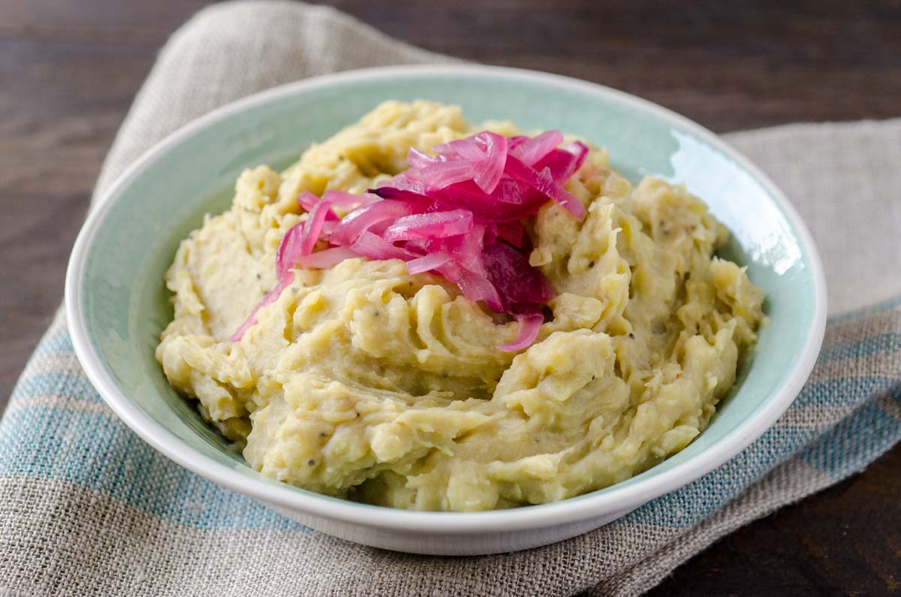

Habichuelas con Dulce

Description
La bandera’s namesake is the tricolor Dominican flag with its distinctive red, white and blue design framing the national insignia. "La Bandera" food is mainly composed of Dominican rice and beans with chicken, the red represented by the beans, the white by the rice, and – with a splash of poetic and culinary license here – the meat – usually chicken or beef – represents the third color. There's always also some type of salad to go with them.
Ingredients
- 4 green bananas
- 1½ teaspoons salt
- 4 tablespoons butter or olive oil
- ½ cup water at room temperature
Steps
- Peel bananas: Peel the bananas. Cut into eighths (two halves, then the halves into quarters).
- Boil bananas: Boil the bananas in water, to which you have added the salt, until they are very soft. Remove from heat.
- Mash bananas: Mash the bananas just removed from the water with a fork (be careful not to burn yourself).
- Add butter (or olive oil) and mix well.
- Add water at environmental temperature and mix until you have a very smooth puree (it will harden a little in a while).
- Serve: Serve the mangú with sautéed onions and fried eggs or scrambled eggs, fried Dominican salami, or fried cheese.